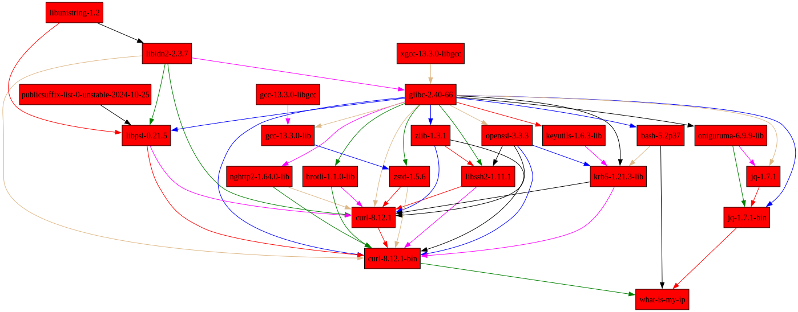

Nix Workshop
Part 1: Nix, Flakes & Nix
DevShell
Gabriel Nützi, gabriel.nuetzi@sdsc.ethz.ch
Cyril Matthey-Doret, cyril.matthey-doret@epfl.ch
May 8, 2025 (Updated: Aug 27, 2025), Repository, Slides
Help
How to use these slides:
- S: See the speaker notes and solutions.
- Esc: See all slides and jump around.
- Space: Go forward.
- Shift + Space: Go backward.
Acknowledgment
Thanks to the following contributors:
Cyril Matthey-Doret for reviewing the initial draft.
SDSC ORDES Team for feedback.
Farid Zakaria for giving the talk at PlanetNix 2025 which we integrated into this talk.
The Nix Community at
Requirements
All examples refer to the workshop repository in the root directory.
Ensure that you have the requirements fulfilled.
Motivation
Why Nix?
You start python and you get this:
>>> import numpy
Segmentation fault (core dumped)💣 It Works on My Machine

🧪 Development Setups
| Feature | Local Development | Mamba | Devcontainer | Nix/DevShell |
|---|---|---|---|---|
| Maintainenance | ⚠️ High | ⚠️ Medium | ⚠️ Medium | ⚠️ Medium |
| Reproducibility | ❌ Low | ⚠️ Medium | ⚠️ Medium | ✅ Very high |
| Ease of Use | ❌ Low | ✅ Easy | ✅ Ok | ❌ Low |
| Dep. Mgmt. | ❌ | ✅ | ⚠️ | ✅ |
| Portability | 💣 | ⚠️ | ✅ | ✅ |
| CI Stability | 💣 | ⚠️ | ⚠️ | ✅ Almost Perfect |
What is Nix?
Nix is a software package management & deployment infrastructure:
🏃🏻♂️Software is built and run in a predictable and reproducible way.
✅ Builds are reproducible — same inputs give same results.
🔄 Installs packages without breaking others.
📦 Can create isolated dev environments.
💻 Works on Linux, macOS.
Nix started 2006 …

Learn Nix the Fun Way
Why I love Nix, and you should too! 💖
What Is My IP?
#! /usr/bin/env bash
curl -s http://httpbin.org/get | jq --raw-output .origin12.24.14.88What guarantees that jq or curl is
available?
Build It With Nix (1)
{
system ? builtins.currentSystem,
pkgs ?
import
(builtins.fetchTarball "https://github.com/NixOS/nixpkgs/archive/9684b53175fc6c09581e94cc85f05ab77464c7e3.tar.gz")
{
inherit system;
},
}:
pkgs.writeShellScriptBin "what-is-my-ip"
''
${pkgs.curl}/bin/curl -s http://httpbin.org/get | \
${pkgs.jq}/bin/jq --raw-output .origin
''Build It With Nix (2)
Building this Nix code gives you a store path:
/nix/store/7x9hf9g95d4wjjvq853x25jhakki63bz-what-is-my-ipwhich contains the script and all needed dependencies
#!/nix/store/mc4485g4apaqzjx59dsmqscls1zc3p2w-bash-5.2p37/bin/bash
/nix/store/zl7h70n70g5m57iw5pa8gqkxz6y0zfcf-curl-8.12.1-bin/bin/curl \
-s "http://httpbin.org/get" | \
/nix/store/y50rkdixqzgdgnps2vrc8g0f0kyvpb9w-jq-1.7.1-bin/bin/jq \
--raw-output ".origin"Nix has encoded the used executables with
store paths (/nix/store).
Quiz: Can you share this script with your colleague?
What Is This Hash ?
/nix/store/7x9hf9g95d4wjjvq853x25jhakki63bz-what-is-my-ipSeeing 7x9hf9g95d4wjjvq853x25jhakki63bz is an extremely strong guarantee of the built software
down to the commit/version and build instructions
including dependencies.

The Nix Language
In a Nutshell
The Nix Language
A domain-specific functional language (no side-effects).
Structurally similar to JSON but with functions.
Supports fundamental data types such as
string,integer,path,list, andattribute set. See Nix Language Basics.Lazy evaluated, expression evaluation delayed until needed.
⚠️The Nix language is specifically designed for deterministic/reproducible software deployment.
The Nix Language
Nix files have suffix
.nixand contain mostly 1 function.The function
args: ...in filemyfunction.nixtakes one argumentbananaand# myfunction.nix banana: # Function with one argument `banana`. let # Define variables. number = 1; # A number. list = [ 1 2 3 "help"]; # A list with 4 elements. set = { a = 1; b.c.d = [1]; }; # A nested attribute set. result = banana.getColor { v = number; }; # Calls another function `banana.getColor`. in { x = number; y = set.b.c.d; z = result; } # Return an attribute set.returns an attribute set
{ x = ... }.Watch this short introduction for the basic building block.
Examples
Verify the next examples in the Nix REPL (interactive Nix shell):
nix replor pass std. input to nix eval:
echo '
let a = 3; in a
' | nix eval --file -echo '3' | just evalExamples
let # start for "procedural" statements
mult = a: b: a * b;
mult10 = mult 10; # Bind the first arg.
in
mult10 (mult 8 2)
# -> 160let
f = args: {
a = args.banana + "-nice";
b = args.orange + "-sour";
};
in
f { banana = "1"; orange = "2" }
# -> { a = "1-nice"; b = "2-sour"; }let
f = { ban, ora, ... }: { # Destructuring
a = ban + "-nice";
b = ora + "-sour";
};
in
f { ban = "1"; ora = "2"; berry ="3"; }
# -> { a = "1-nice"; b = "2-sour"; }let
f = { list ? [] }: {
a = builtins.map (x: x*x) list;
};
in f [ 1 3 9 ]
# -> { a = [ 1 9 81 ] }More Examples
# Concat lists.
[ 1 2 3 ] ++ [ 1 2 3 ]
# [ 1 2 3 1 2 3 ];# Merge attribute sets.
{ a = 1; b = 2; } // { a = 2; c = 3; }
# -> { a = 2; b = 2; c = 3; }rec {
b = 2;
c = b + d;
d = 10;
} # Discouraged: prefer `inherit`.
# -> { b = 2; c = 12; d = 10; }# Lazy evaluation.
let
x = abort "fail";
in
if false then x else 42
# -> 42# Import files.
let
myfunc = import ./myfunction.nix;
in myfunc 1 + (import ./other.nix 3)Attribute Set Building: inherit
# Inherit 'key = value'.
let
width = 100;
color = "blue";
set = { b = 1; };
in
{
inherit color; # color = color;
inherit (set) b; # b = set.b;
}Variable Interpolation
let
key = "c"
color = "blue";
set = {
c = { v = "hello-${color}" ;}
};
in set.${key}.v
# -> "hello-blue"Strings and Paths
let
dir = ./.github/workflows; # A path. Nix makes them absolute!
file = "${dir}/gh-pages.yaml"; # Interpolated path gets added into the `/nix/store`.
in file
# -> "/nix/store/w9il9gvki2nfdzfc1lrlbiv3xy3mx90a-workflows/gh-pages.yaml"Caution With let Statements
Do not reassign in let blocks:
let
a = "hello";
a = a + "world";
# ^
# |
# 🆘 Endless recursion, this is not reassigning.
in a✅ Configure nixd (Nix Language Server) in your IDE
to see “Go to definitions”.
Questions & Exercise
Do you have questions?
Try out the examples shown before yourself with nix repl
(see slide)
Time: 5min
Revisit whats-is-my-ip
Building Our First Package (1)
Put the following in a script whats-is-my-ip.nix:
let
system = builtins.currentSystem;
# Download something into the `/nix/store/...-source`
src = builtins.fetchTarball "https://github.com/NixOS/nixpkgs/archive/9684b53175fc6c09581e94cc85f05ab77464c7e3.tar.gz";
# Import the `default.nix` in the `/nix/store/...-source`
f = import src;
pkgs = f { inherit system; }; # This is the package attribute set of `nixpkgs`.
in
pkgs.writeShellScriptBin "what-is-my-ip" ''
${pkgs.curl}/bin/curl -s http://httpbin.org/get | \
${pkgs.jq}/bin/jq --raw-output .origin
''Wait! What is github.com/NixOS/nixpkgs ?
The repository
nixpgkgsis a giant mono-repository with Nix code to build over 130k software packages (derivations).from basic C/C++ compiler (named
stdenv) and infrastructure to bootstrap tools of any Linux (coreuitlsetc.) up toleaf-like packages like
signal,firefox, etc.
A commit on
nixpkgsrepresents the version of all packages at that commit.
What is github.com/NixOS/nixpkgs ?
Importing
default.nix, [1] fromnixpkgs(seeimport) returns a function to instantiate this giant flat attribute setpkgsfor yoursystem.Search packages here and more granular here.
Search functions here.
Building Our First Package (2)
nix build -f ./examples/what-is-my-ip.nix --print-out-paths
> "/nix/store/7x9hf9g95d4wjjvq853x25jhakki63bz-what-is-my-ip"Explore whats in
/nix/store/7x9hf9g95d...-what-is-my-ip/bin/what-is-my-ip:
#!/nix/store/mc4485g4apaqzjx59dsmqscls1zc3p2w-bash-5.2p37/bin/bash
/nix/store/zl7h70n70g5m57iw5pa8gqkxz6y0zfcf-curl-8.12.1-bin/bin/curl \
-s "http://httpbin.org/get" | \
/nix/store/y50rkdixqzgdgnps2vrc8g0f0kyvpb9w-jq-1.7.1-bin/bin/jq \
--raw-output ".origin"Building Our First Package (3)
pkgs.writeShellScriptBin "what-is-my-ip" ''
${pkgs.curl}/bin/curl -s http://httpbin.org/get | \
${pkgs.jq}/bin/jq --raw-output .origin
''The pkgs.writeShellScriptBin is a trivial
builder function around the fundamental derivation
command (see appendix).
Inspect the Dependency Graph
Run
nix-store --query --include-outputs --graph \
$(nix build -f ./examples/what-is-my-ip.nix --print-out-paths) > graph.dot
nix develop --command dot -Grankdir=TB -Gconcentrate=true -Tpng graph.dot > graph.pngand inspect graph.png.
Inspect the Dependency Graph

Homework: Inspect the Dependency Graph
- Reproduce the commands for building
what-is-my-ip.nixon your machine in the workshop repository. - Inspect the store path.
- Explore the dependencies and answer the quiz below:
Time: 15-20min
Quiz: What do you expect
/nix/store/zl7h70n70g5m57iw5pa8gqkxz6y0zfcf-curl-8.12.1-bin/bin/curl
links to and what does your system curl link to?
Use ldd to inspect.
What Is a Flake?
You have seen files like flake.nix lying around in
repositories already.
a deterministic way to manage dependencies and configurations in Nix (Slide of the Nix Founder).
comes with a
flake.lockfile which locks dependencies.
Remember fetchTarball "..."
in what-is-my-ip.nix which locks pkgs to a
certain commit on the nixpkgs repository, a flake is a
better way to manage locked inputs.
What Is a Flake (2)
A flake
{
inputs = { /* ... */ };
outputs = inputs: {
packages = /* implementation */
# ... other output attributes ...
}
}What Is A Flake? (3)
Nix can evaluate a
flake.nixby calling theoutputsfunction passing allinputs.Try
nix repl .to load all outputs of./flake.nixin directory..Check
outputs.packages.x86_64-linux = { ... }. It is a flat attribute set of Nix derivations.Note: Certain output attributes are
systemscoped, e.g.packages.x86_64-linux.
What Is a Nix Derivation?
A derivation is a
specialized attribute set, describes how to build a Nix package.
{ type = "derivation"; ... }Check
nix repl -f <nixpkgs>and typepkgs.curl.type.
Derivation Definition
A derivation is an instruction that Nix uses to realize a package. Created using a special
derivationfunction in the Nix language, it can depend on multiple other derivations and produce one or more outputs. The complete set of dependencies required to build a derivation—including its transitive dependencies—is called a closure. [Ref]
Evaluating a Derivation
When Nix evaluates a derivation, it stores the result in the Nix
store (/nix/store) as a store derivation
(*.drv) (more details).
Store Derivation
A store derivation (
*.drv) contains only build instructions for Nix to realize/build it. This can be literally anything, e.g. a software package, a wrapper shell script or only source files.
See appendix for how to inspect
the internal representation of a *.drv file.
Build A Derivation - Evaluating & Realizing It
We can build the above derivation - or in other terms evaluate & realize it in the Nix store - by doing:
nix build -L "./examples/simple-flake#packages.x86_64-linux.mytool" \
--print-out-paths --out-link ./mytool✅ Short Form:
nix build "./examples/simple-flake#mytool" uses
builtins.currentSystem (works also for macOS users).
or in steps
# Evaluate it.
drvPath=$(nix eval "./examples/flake-simple#packages.x86_64-linux.mytool" --raw)
# Realize it.
nix build -L "$drvPath" --print-out-paths --out-link ./mytoolBuild A Derivation - Evaluating & Realizing It (2)
✅ Inspect tree ./mytool:
/nix/store/blm702jzc...vd9gxp4c9n-mytool
└── bin
└── mytool✅ Run it with:
./mytool/bin/mytool -hnix run "./examples/flake-simple#mytool"What Is an Installable
The path
./examples/flake-simple#packages.x86_64-linux.mytool is
referred to as a Flake output attribute installable, or simply an installable.
An installable is a Flake output that can be realized in the Nix store.
./examples/flake-simplerefers to this repository’sflake.nixdirectory.packages.x86_64-linux.mytoolfollowing#is an output attribute defined within the flake.
Most modern Nix commands accept
installables as input, making them a fundamental
concept in working with Flakes. You should only use the modern
commands, e.g. nix <subcommand>. Stay away
from the command nix-env.
Build/Run A Derivation - Github
You can also specify github repositories and nested
flakes and build/run derivations on them:
nix build -L "github:sdsc-ordes/nix-workshop?dir=examples/flake-simple#mytool"
nix run "github:sdsc-ordes/nix-workshop?dir=examples/flake-simple#mytool"Homework - Inspect a Flake
Load the
flakein the the root directory innix repland use:lf .- Inspect the attribute
inputs.nixpkgs. - Inspect the string
"${inputs.nixpkgs}"and explore the output! - Try to explain
import "${inputs.nixpkgs}" { system = "x86_64-linux"; }.
- Inspect the attribute
Eval/build/run the
treefmtutility in thepackagesoutput in the flake inside the root directory.Hints:
nix eval --impure --expr 'builtins.currentSystem'packages.${system}.treefmtnix run"github:sdsc-ordes/nix-workshop#..."
Time: 15-20min
What Is a DevShell?
Its a Nix derivation in the output attribute set
devShells of the flake.nix:
{
inputs = { /* ... */ };
outputs = inputs: {
packages.x86_64-linux = {
mytool = /* derivation */
};
devShells.x86_64-linux = {
banana-shell = /* derivation */
};
# ... other outputs ...
}
}The banana-shell derivation is meant to be consumed by
nix develop.
Create A DevShell
The flake in ./examples/flake-simple defines
devShells an output:
devShells.x86_64-linux =
let pkgs = inputs.nixpkgs-unstable.legacyPackages.${system}; in
{
default = pkgs.mkShell {
packages = [ pkgs.skopeo pkgs.cowsay ];
shellHook = ''
echo "Hello from Shell"
${pkgs.cowsay}/bin/cowsay
'';
};
}
);Function pkgs.mkShell makes a derivation consumable by
nix develop:
nix develop "github:sdsc-ordes/nix-workshop?dir=examples/flake-simple#default" --command zshHomework: Modify the DevShell
- Modify
./examples/flake-simpleto include your package fromnixpkgs.
Time: 5 min
Use devenv.sh for Nix DevShells.
🚧 Nix DevShells from
nixpkgs(pkgs.mkShell) are raw and too simplistic.🌻Nix DevShells from
devenv.shprovides more concise configuration.- ❤️🔥Configuration based on mechanics which drive
NixOS(NixOS Modules).
- ❤️🔥Configuration based on mechanics which drive
Questions
Workshop 🏑
Time to get 🫵r fingers dirty with the following exercises:
- Setup a
flake.nixfor a Go project. - Write a function
forAllSystems. - Setup a Nix shell with https://devenv.sh.
- Add packages to the Nix shell.
- Add Nix shell capabilities.
- Add custom options to
devenvfor arun-itscript [optional].
- Build the Go executable into a derivation.
- Version pin the Go compiler [optional].
- Build a Docker container with Nix with your package.
All steps are inside examples/flake-go/step-* where each
step is considered a a root of an examples
repository.
Outlook
🦸Devenv Nix Shell is deterministic/reproducible and with lots of power.
Foundation of a
flake.nixand integration of a Nix shell. Simpler approach withdevenv.nix.Nix community is flourishing - contribute or support it:
Goodies 🍬 from SDSC
We maintain well-structured, state-of-the-art,
nix-enabled repository templates for toolchains
like:
The templates provide CI out of the box and are ready to use!
Your Nix Journey
🌍 Tackling non-reproducible software distribution is hard — but its essential.
🚀 Embrace Nix to gain reproducibility, consistency and healthy local development & CI.
🤝 The Nix community is welcoming and supportive — don’t hesitate to ask!
✅ Check the references/resources provided (🤷♀️ sometimes its a mess, yes).
References
Links
Appendix
Fixed Point Combinator 🤯
In maths a fix point x of a function F is
defined as:
\[ x = F(x). \]
In functional programming a fix-point combinator
fix is a higher-order function.
It returns the
fix point of a function F:
fix = F: let x = F x in xFixed-Point Combinator 🤯
That is how recursive self-referential sets can be defined.
let
fix = F: let x = F x in x;
# Define the constructor of the set.
newSet = self: { path = "/bin"; full = self.path + "/my-app"; };
mySet = fix newSet; # fulfills: mySet == fix mySet;
in
mySet.fullSeems recursive in let x = F x but but isn’t
🤯, because its lazy evaluated. What you need to know about laziness..
Used in pkgs.callPackage in nixpkgs.
Why Nix is Lazy Evaluated?
The choice for lazy evaluation allows us to write Nix expressions in a convenient and elegant style: Packages are described by Nix expressions and these Nix expressions can freely be passed around in a Nix program – as long as we do not access the contents of the package, no evaluation and thus no build will occur. […] At the call site of a function, we can supply all potential dependencies without having to worry that unneeded dependencies might be evaluated. For instance, the whole of the Nix packages collection is essentially one attribute set where each attribute maps to one package contained in the collection. It is very convenient that at this point, we do not have to deal with the administration of what exactly will be needed where. Another benefit is that we can easily store meta information with packages, such as name, version number, homepage, license, description and maintainer. Without any extra effort, we can access such meta-information without having to build the whole package. [Paper]
The builtin function
derivation
This is what pkgs.writeShellScriptBin would expand to:
(see ./examples/what-is-my-ip-orig.nix):
derivation {
inherit system;
name = "what-is-my-ip";
builder = "/bin/sh";
args = [
"-c"
''
${pkgs.coreutils}/bin/mkdir -p $out/bin
{
echo '#!/bin/sh'
echo '${pkgs.curl}/bin/curl -s http://httpbin.org/get | \
${pkgs.jq}/bin/jq --raw-output .origin'
} > $out/bin/what-is-my-ip
${pkgs.coreutils}/bin/chmod +x $out/bin/what-is-my-ip
''
];
outputs = [ "out" ];
}Inspect a Derivation
nix eval "./examples/flake-simple#packages.x86_64-linux.mytool"
> «derivation /nix/store/l8pma77py04gd5819zkk3h7jx0bgxqgm-mytool.drv»./examples/flake-simple#packages.x86_64-linux.mytool is
an installable. More later!
# Inspect the store derivation.
cat /nix/store/l8pma77py04gd5819zkk3h7jx0bgxqgm-mytool.drvInspect a Derivation (2)
> Derive([("out","/nix/store/5rvqlxk2vx0hx1yk8qdll2l8l62pfn8n-treefmt","","")],
[("/nix/store/1fmb3b4cmr1bl1v6vgr8plw15rqw5jhf-treefmt.toml.drv",["out"]),
("/nix/store/3avbfsh9rjq8psqbbplv2da6dr679cib-treefmt-2.1.0.drv",["out"]),
("/nix/store/61fjldjpjn6n8b037xkvvrgjv4q8myhl-bash-5.2p37.drv",["out"]),
("/nix/store/gp6gh2jn0x7y7shdvvwxlza4r5bmh211-stdenv-linux.drv",["out"])]
,["/nix/store/v6x3cs394jgqfbi0a42pam708flxaphh-default-builder.sh"]
,"x86_64-linux","/nix/store/8vpg72ik2kgxfj05lc56hkqrdrfl8xi9-bash-5.2p37/bin/bash",
["-e","/nix/store/v6x3cs394jgqfbi0a42pam708flxaphh-default-builder.sh"],
[ ("__structuredAttrs",""),("allowSubstitutes",""),
("buildCommand","target=$out/bin/treefmt\nmkdir -p \"$(dirname \"$target\")\"\n\nif [ -e \"$textPath\" ]; then\n mv \"$textPath\" \"$target\"\nelse\n echo -n \"$text\" > \"$target\"\nfi\n\nif [ -n \"$executable\" ]; then\n chmod +x \"$target\"\nfi\n\neval \"$checkPhase\"\n"),("buildInputs",""),("builder","/nix/store/8vpg72ik2kgxfj05lc56hkqrdrfl8xi9-bash-5.2p37/bin/bash"),("checkPhase","/nix/store/8vpg72ik2kgxfj05lc56hkqrdrfl8xi9-bash-5.2p37/bin/bash -n -O extglob \"$target\"\n"),("cmakeFlags",""),("configureFlags",""),("depsBuildBuild",""),("depsBuildBuildPropagated",""),("depsBuildTarget",""),("depsBuildTargetPropagated",""),("depsHostHost",""),("depsHostHostPropagated",""),("depsTargetTarget",""),("depsTargetTargetPropagated",""),("doCheck",""),("doInstallCheck",""),("enableParallelBuilding","1"),("enableParallelChecking","1"),("enableParallelInstalling","1"),("executable","1"),("mesonFlags",""),("name","treefmt"),("nativeBuildInputs",""),("out","/nix/store/5rvqlxk2vx0hx1yk8qdll2l8l62pfn8n-treefmt"),("outputs","out"),("passAsFile","buildCommand text"),("patches",""),("preferLocalBuild","1"),("propagatedBuildInputs",""),("propagatedNativeBuildInputs",""),("stdenv","/nix/store/hsxp8g7zdr6wxk1mp812g8nbzvajzn4w-stdenv-linux"),("strictDeps",""),("system","x86_64-linux"),("text","#!/nix/store/8vpg72ik2kgxfj05lc56hkqrdrfl8xi9-bash-5.2p37/bin/bash\nset -euo pipefail\nunset PRJ_ROOT\nexec /nix/store/0jcp33pgf85arjv3nbghws34mrmy7qq5-treefmt-2.1.0/bin/treefmt \\\n --config-file=/nix/store/qk8rqccch6slk037dhnprryqwi8mv0xs-treefmt.toml \\\n --tree-root-file=.git/config \\\n \"$@\"\n\n")])JSON output of the above:
nix derivation show /nix/store/l8pma77py04gd5819zkk3h7jx0bgxqgm-mytool.drvInspect a Derivation (3)
{
"/nix/store/l8pma77py04gd5819zkk3h7jx0bgxqgm-mytool.drv": {
"args": [
"-e",
"/nix/store/vj1c3wf9c11a0qs6p3ymfvrnsdgsdcbq-source-stdenv.sh",
"/nix/store/shkw4qm9qcw5sc5n1k5jznc83ny02r39-default-builder.sh"
],
"builder": "/nix/store/9nw8b61s8lfdn8fkabxhbz0s775gjhbr-bash-5.2p37/bin/bash",
"env": {
"__structuredAttrs": "",
"allowSubstitutes": "",
"buildCommand": "target=$out/bin/mytool\nmkdir -p \"$(dirname \"$target\")\"\n\nif [ -e \"$textPath\" ]; then\n mv \"$textPath\" \"$target\"\nelse\n echo -n \"$text\" > \"$target\"\nfi\n\nif [ -n \"$executable\" ]; then\n chmod +x \"$target\"\nfi\n\neval \"$checkPhase\"\n",
"buildInputs": "",
"builder": "/nix/store/9nw8b61s8lfdn8fkabxhbz0s775gjhbr-bash-5.2p37/bin/bash",
"checkPhase": "/nix/store/9nw8b61s8lfdn8fkabxhbz0s775gjhbr-bash-5.2p37/bin/bash -n -O extglob \"$target\"\n",
"cmakeFlags": "",
"configureFlags": "",
"depsBuildBuild": "",
"depsBuildBuildPropagated": "",
"depsBuildTarget": "",
"depsBuildTargetPropagated": "",
"depsHostHost": "",
"depsHostHostPropagated": "",
"depsTargetTarget": "",
"depsTargetTargetPropagated": "",
"doCheck": "",
"doInstallCheck": "",
"enableParallelBuilding": "1",
"enableParallelChecking": "1",
"enableParallelInstalling": "1",
"executable": "1",
"mesonFlags": "",
"name": "mytool",
"nativeBuildInputs": "",
"out": "/nix/store/blm702jzcwfppwrrj9925ivd9gxp4c9n-mytool",
"outputs": "out",
"passAsFile": "buildCommand text",
"patches": "",
"preferLocalBuild": "1",
"propagatedBuildInputs": "",
"propagatedNativeBuildInputs": "",
"stdenv": "/nix/store/npp9k9062ny7w0k1i03ij6xvqb7vhvjh-stdenv-linux",
"strictDeps": "",
"system": "x86_64-linux",
"text": "#!/nix/store/9nw8b61s8lfdn8fkabxhbz0s775gjhbr-bash-5.2p37/bin/bash\n\"/nix/store/xkk1gr9bw2dbdjna8391rj1zl1l3dmhq-cowsay-3.8.4/bin/cowsay\" \"Hello there ;)\"\necho \"-------------------------------------\"\n\"/nix/store/4ydiim4lfk6nyab4pdkjj9s33pgbigfd-figlet-2.2.5/bin/figlet\" \"Do you expect\"\n\"/nix/store/4ydiim4lfk6nyab4pdkjj9s33pgbigfd-figlet-2.2.5/bin/figlet\" \"something \"\n\"/nix/store/4ydiim4lfk6nyab4pdkjj9s33pgbigfd-figlet-2.2.5/bin/figlet\" \"useful ? \"\n\n"
},
"inputDrvs": {
"/nix/store/1fsd2cb5ab7ci01ks4j0gbbq254jw6sk-stdenv-linux.drv": {
"dynamicOutputs": {},
"outputs": ["out"]
},
"/nix/store/lrf9kbhlaf5mkvnlf3zr9wzvk7c2z72l-bash-5.2p37.drv": {
"dynamicOutputs": {},
"outputs": ["out"]
},
"/nix/store/phq4wh4490manblg905xixpc3gvwr149-figlet-2.2.5.drv": {
"dynamicOutputs": {},
"outputs": ["out"]
},
"/nix/store/wdpicivrj0bmzh935rr1hm1vlk18j0mp-cowsay-3.8.4.drv": {
"dynamicOutputs": {},
"outputs": ["out"]
}
},
"inputSrcs": [
"/nix/store/shkw4qm9qcw5sc5n1k5jznc83ny02r39-default-builder.sh",
"/nix/store/vj1c3wf9c11a0qs6p3ymfvrnsdgsdcbq-source-stdenv.sh"
],
"name": "mytool",
"outputs": {
"out": {
"path": "/nix/store/blm702jzcwfppwrrj9925ivd9gxp4c9n-mytool"
}
},
"system": "x86_64-linux"
}
}